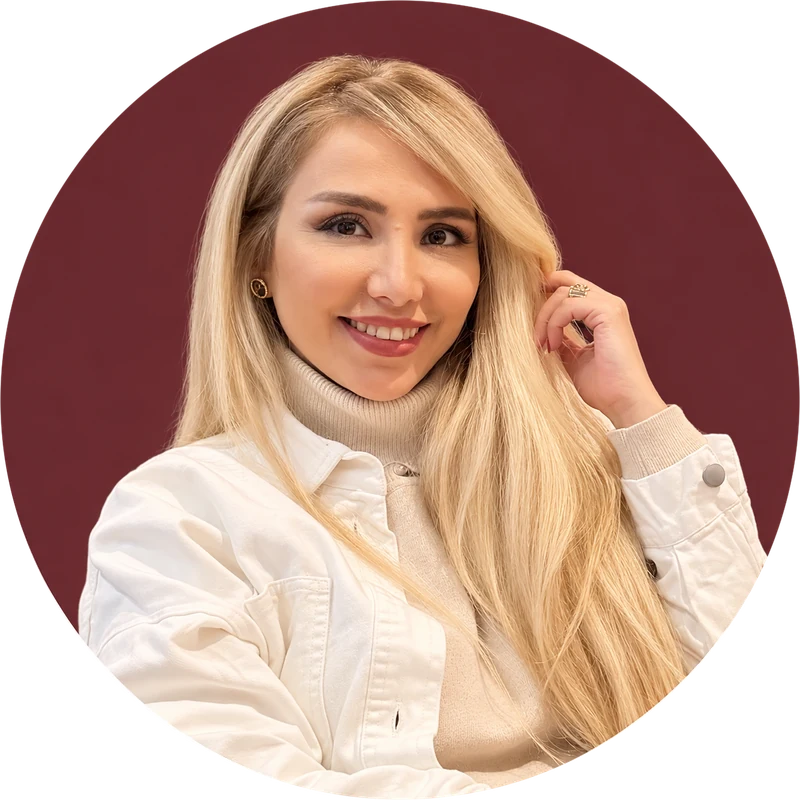

I’m Helen, a product designer who turns tangled workflows into calm, scalable products, from domain modelling to the last pixel.
End-to-end design of complex products, from requirements to high-fidelity UI.
Stakeholder interviews, workflow analysis and recurring usability feedback sessions with real users.
Modelling entities, states and rules so every screen has a reason to exist.
Information architecture and workflows for dense, data-heavy tools.
Well-structured Figma files, user stories and delivery files that engineers and QA can build from.
Component libraries I build, maintain and apply consistently across large products.
Hired three designers, led a team of up to four and shaped design practices in a development-led team.
ChatGPT, Claude, Figma AI and Lovable in exploration, research, critique and documentation.
I start where the problem needs it: desk research to learn the domain, or a conversation with the product owner, SME or CEO.
I study how similar products solve it, even through videos when access is limited, then explore ideas.
For complex features I draw the flow early. It sharpens my thinking and travels with the deliverables.
Every feature gets a feasibility check with engineering, lighter for small, well-understood ones, never skipped.
I look past what users say to what they actually need, then weigh it against business and team constraints.
I design with later iterations in mind, so the product can scale and improve from real user behaviour.

I started as a front-end developer and moved into product design, so I think about how things are built as much as how they look. That helps me design products that engineers can build, QA can verify and users can understand.
Over the past decade I’ve worked on compliance, accounting, e-commerce, CRM and consumer products, remotely with teams in the UK, the US and Denmark. Most recently I led product design at Fintranet, a UK-based B2B software company, hiring and mentoring three designers while staying hands-on.